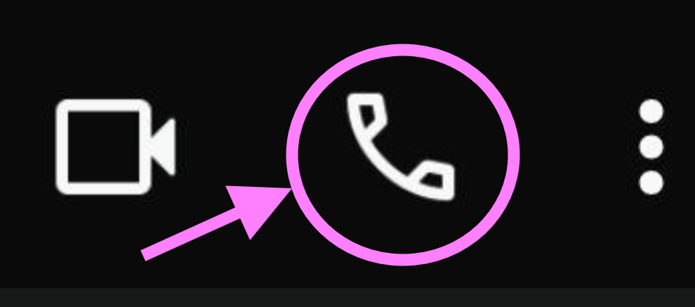

Llamada de Voz
- 1. Abra la aplicación WhatsApp.
- 2. Entre al chat del contacto.
- 3. Toque el icono de teléfono en la parte superior.
- 4. Espere a que la otra persona conteste.
- 5. Para finalizar, presione el botón rojo de colgar.

Videollamada
- 1. Abra WhatsApp y entre al chat.
- 2. Toque el icono de cámara .
- 3. Espere a que la persona conteste.
- 4. Durante la llamada podrá verse y hablar.
- 5. Para finalizar, presione el botón rojo.